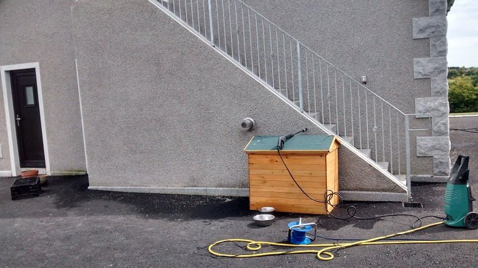

OUR SERVICES
Staircases
Staircases for domestic and commercial requirements.

Let’s work through
the details.
Travers Steel lists staircases among its steelwork services. The team offers design, manufacture, delivery and installation, with quotations tailored to the requirements of each customer. Discuss your dimensions, intended use and project details to arrange a free quotation.
Discuss staircases ↗